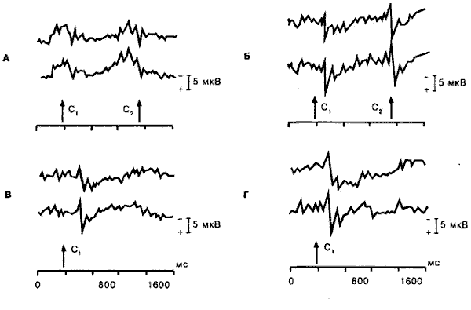
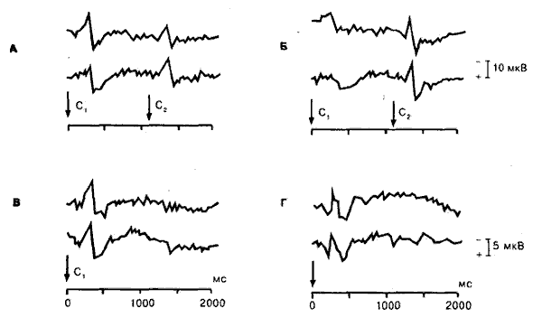
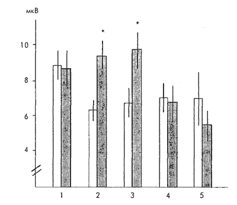
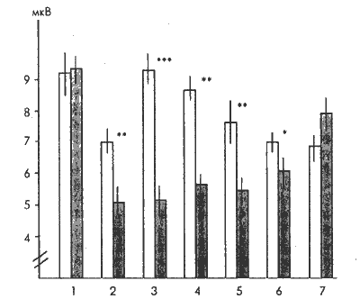
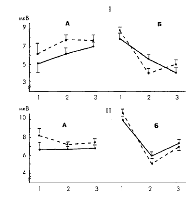

Правое полушарие воспринимает слово и адекватно реагирует на него, но при этом субъект не осознаёт ни этого слова, ни связи реакции с ним.
Психофизиология бессознательного
Основы психофизиологии, М. ИНФРА-М, 1998, с.220-243, Глава 12 Отв.ред. Ю.И. Александров
1. ПОНЯТИЕ БЕССОЗНАТЕЛЬНОГО В ПСИХОФИЗИОЛОГИИ
В процессе деятельности человека в постоянно меняющейся окружающей среде поступающая информация перерабатывается на разных уровнях центральной нервной системы. Переключение нервной сигнализации на филогенетически новый уровень происходит в том случае, если сохраняется возможность обработки информации и осуществления рефлекторного ответа на низших звеньях интеграции нервных процессов. Это хорошо видно на примере автоматизированного поведения, когда с упрочением навыка всё большая часть поступающей извне информации не доходит до сознания, а обрабатывается и переключается на эффекторную систему на более низких уровнях центральной нервной системы. Подобная организация обработки информации, поступающей в головной мозг человека, позволяет измерять в эксперименте чувствительность любой сенсорной системы с помощью регистрации различных реакций. Одни из них считаются показателем осознания раздражителя, для других последнее необязательно - это многообразные вегетативные, биоэлектрические, эмоциональные, поведенческие и психические реакции.
Решение давнего спора о том, следует ли у человека всё психическое отождествлять только с сознательным опытом или необходимо допустить существование бессознательных психических явлений, кроме естественнонаучного значения, имеет несомненный методологический аспект. Отрицание бессознательного с неизбежностью закрывает естествоиспытателю путь для выявления причинных связей и причинных отношений между отдельными явлениями психической жизни человека. Сознание, как писал Л. С. Выготский [1982], характеризуется перерывами и нередко отсутствием видимых связей между отдельными его элементами. Понятие бессознательного, заполняя пробелы между сознательными явлениями, позволяет изучать все психические функции у человека вплоть до самых высших форм с позиций детерминизма. Таким образом, бессознательное - это гносеологически необходимая категория. Исходя из этого принципиального положения, (а его справедливость подтверждается многими фактами, полученными в экспериментально-психологических и психофизиологических исследованиях), следует считать, что бессознательное - это такая же психическая реальность, как и сознательная психическая жизнь.
Понятие бессознательного нередко толкуется весьма широко и включает в себя все психические явления вне сферы сознания, т. е. те содержания психической жизни, о наличии которых человек либо не подозревает в данный момент, либо не знает о них в течение длительного времени, либо вообще никогда не знал. В качестве одного из примеров бессознательного можно привести факт неосознаваемости сигналов, непрерывно поступающих в головной мозг из самого организма, его внутренних органов, мышц, суставов. Бессознательное, понимаемое в узком смысле (по З. Фрейду) как вытеснение из сознания, возникает в онтогенезе у человека относительно поздно и, в известном смысле, является производной величиной от развития и дифференциации сознания [Выготский, 1982].
В современной психофизиологии всё большее признание получает термин "неосознаваемое". Он обозначает ряд неоднородных явлений. К ним следует отнести феномен, обозначаемый как предсознательное, - это содержания душевной жизни, которые в данный момент неосознаваемы, так как находятся вне сферы избирательного внимания, но могут легко стать осознаваемыми при переключении на них внимания.
Широкий круг психических явлений у человека в норме и патологии связан с неосознаваемым как подпороговым (по отношению к сознанию) восприятием эмоционально или мотивационно значимых, но физически слабых внешних сигналов, которые не достигают уровня сознания и не осознаются субъектом, однако вызывают вегетативные, биоэлектрические и эмоциональные реакции и могут влиять на процессы высшей нервной деятельности. Ещё одна форма неосознаваемого - это когнитивная установка, т. е. состояние готовности субъекта к определённой активности, которое формируется на неосознаваемом уровне при наличии двух основных условий: актуальной потребности у субъекта и объективной ситуации её удовлетворения.
Автор общей теории установки Д. Н. Узнадзе [1958] считал, что установка образуется без участия сознания и не является феноменом сознания, а отражает какие-то процессы, организующие на неосознаваемом уровне специфическое состояние психики, которое в значительной мере предваряет решение когнитивной задачи на сознательном уровне. Установка как бы заранее организует в конкретной ситуации направленность субъекта на определённую активность, готовность к той или иной форме реагирования и стратегию решения задачи. Кроме того, в организации на неосознаваемом уровне произвольных движений существенную регулирующую и координирующую роль играет установка, или, как её называет B. C. Гурфинкель [1995], "система внутренних представлений" (см. гл. 5).
Перед психофизиологией бессознательного стоят два основных
вопроса:
а) можно ли у бодрствующего человека вызвать или выработать
психические, поведенческие, эмоциональные и вегетативные биоэлектрические
реакции (или состояния) на внешние стимулы, в частности, семантические,
без осознания их человеком? и
б) как влияют эти неосознаваемые явления на психические
функции и поведение субъекта, осуществляемые на сознательном уровне,
и каковы физиологические механизмы подобных влияний?
2. ИНДИКАТОРЫ ОСОЗНАВАЕМОГО И НЕОСОЗНАВАЕМОГО ВОСПРИЯТИЯ
Проблема экспериментального изучения неосознаваемого восприятия сводится к попыткам выявить пороговую разницу между двумя индикаторами: один из них - показатель осознания стимула; другой - подпорогового (по отношению к осознанию) эффекта этого стимула. Разница в пороговой величине этих двух индикаторов составляет область бессознательного или неосознаваемого, в пределах которой внешний стимул может вызывать вегетативные и биоэлектрические реакции, а также влиять на поведенческие и психические функции человека.
Первое экспериментальное изучение зоны неосознаваемого было осуществлено Г. В. Гершуни [1977] путем вычисления количественных отношений между силой звуковых или электрокожных раздражений, которые ощущаются субъектом и вызывают различные ориентировочные реакции (расширение зрачка, кожно-гальваническая реакция, реакция депрессии альфа-ритма и дыхательная реакция). Неосознаваемая зона, в пределах которой неощущаемые звуковые стимулы вызывают биоэлектрические или вегетативные реакции, была особенно чётко выражена в этих исследованиях при патологии головного мозга, приводящей к астении и понижению возбудимости сенсорной системы. Например, у больных с воздушной контузией головного мозга кожно-гальваническая реакция (КГР) вызывалась звуками на 30-40 дБ ниже порога слышимости. Величина этой зоны непостоянна, она колеблется в довольно значительных пределах, в зависимости от различных факторов, например эмоционального состояния исследуемого [Костандов, 1977].
О факте осознания стимула субъект сообщает в словесном отчёте или с помощью произвольной двигательной реакции. Наибольшие теоретические и методические трудности связаны именно с этими индикаторами сознания, так как они существенно зависят от критериев, которые субъект использует при принятии решения о наличии стимула и своей произвольной реакции на него . Формирование критерия определяется многими факторами: инструкцией экспериментатора; условиями опыта; наличием или отсутствием положительного подкрепления "попадания в цель" и отрицательного подкрепления "ложной тревоги"; размером того и другого; отношением исследуемого к подкреплению и вообще к эксперименту; его характерологическими особенностями ("либералы" и "консерваторы").
Согласно теории статистического обнаружения сигнала использование "консерватором" более строгого критерия принятия решения имеет непосредственное отношение к проблеме неосознаваемого восприятия [Holender, 1986]. По мнению авторов, отрицающих возможность достоверной регистрации в эксперименте эффекта неосознаваемого восприятия у здорового человека, "консерватор", использующий строгий критерий решения о соотношении "сигнал-шум" предпочитает не сообщать о существовании сигнала, если не уверен в его наличии, хотя он может при этом иметь о нем какую-то информацию. Авторы высказывают предположение о том, что неосознаваемое восприятие существует только в тех случаях, когда высокий уровень принятия решения о наличии сигнала неверно определяется исследователем как предел восприятия. Это предостережение весьма существенно и его необходимо учитывать. Конечно, исследуемые, которые боятся совершить ошибку в условиях опыта, когда от них требуется определённый произвольный ответ типа "да-нет", могут не сообщить о стимуле, в вербальной оценке которого они испытывают сомнения, хотя он в той или иной степени осознаётся. На такие раздражения нередко регистрируются биоэлектрические, вегетативные и другие реакции, которые могут ошибочно относиться на счёт неосознаваемого восприятия. Исследуемые "либералы", у которых критерий принятия решения о наличии стимула более низкий, чем у "консерваторов", дают больше положительных произвольных реакций за счёт ответов типа "мне кажется", "я догадываюсь". Понятно, что в этих случаях увеличивается вероятность межсигнальных произвольных реакций или "ложных тревог", но уменьшается количество "подпороговых" восприятий.
Для уверенной констатации в экспериментальных исследованиях
факта неосознаваемого восприятия обязательно соблюдение следующих
трёх критериев [Dixon, 1986]:
а) параметры стимула должны быть значительно ниже порога
опознания;
б) в течение всего исследования, в многократно повторяемых
пробах стимул ни разу не должен осознаваться и
в) необходимо обнаружить не только количественные, но и
качественные различия между регистрируемыми физиологическими реакциями
на осознаваемые и неосознаваемые стимулы. Последний критерий является
определяющим для доказательства факта наличия неосознаваемого
восприятия.
3. СЕМАНТИЧЕСКОЕ ДИФФЕРЕНЦИРОВАНИЕ НЕОСОЗНАВАЕМЫХ СТИМУЛОВ
Впервые в эксперименте феномен неосознаваемого восприятия словесных стимулов был воспроизведен группой психологов "New Look" [McGinnies, 1944]. У здоровых людей (студентов) порог опознания эмоционально неприятных (табу) слов при их тахистоскопическом предъявлении был явно повышен по сравнению с нейтральными словами. При этом табу слова вызывали КГР при таких коротких экспозициях, когда исследуемые ещё не могли правильно назвать эти слова. Если исследуемые и высказывали догадки о табу слове, то они обычно не были связаны с экспонируемым словом. Уже в первых работах была сделана попытка дать нейрофизиологическое объяснение обнаруженному феномену. Предполагались два возможных механизма развития КГР ещё до того, как табу слово осознаётся: КГР - результат действия обратной связи из корковых ассоциативных центров или же прямого действия зрительных импульсов на таламус.
Феномен психологической защиты в виде повышения порога осознания эмоциональных слов был получен и экспериментальным путем. У взрослых здоровых людей предварительно вырабатывалась оборонительная условная реакция на отдельные слоги (при электрокожном подкреплении). После этого измеряли пороги зрительного опознания. Пороги опознания слогов, на которые вырабатывалась оборонительная реакция, были явно выше, чем на нейтральные слоги, хотя какой-либо разницы в степени употребления применяемых слогов в прошлом не было и нельзя считать, что исследуемый подавляет свою произвольную реакцию.
Исследователи, которые наблюдали в эксперименте повышение порога опознания эмоционально значимых слов, слогов или других объектов (например, изображения лица), регистрировали различные биоэлектрические и вегетативные реакции на стимулы, ещё неосознаваемые субъектом, или же отмечали их влияние на мотивацию, оценку величины или характера предъявляемых в последующем на надпороговом, осознаваемом уровне тест-объектов, на содержание представлений, образов, фантазий, на мнемонические способности, на принятие решения о выборе реакции (см. [Костандов, 1977, 1983; Velmans, 1991]). В частности, в серии исследований регистрировались корковые вызванные потенциалы на отдельные слова, которые исследуемые не могли прочесть, так как на экране они были небольшой яркости и предъявлялись на очень короткое время (12-15 мс). Была выявлена чёткая разница в величине поздних компонентов коркового ответа (N 200 и Р 300 ) на нейтральные и эмоционально значимые слова [Костандов, 1983].
Подпороговый эффект неосознаваемых стимулов (в частности, эмоциональных слов) в этих исследованиях проявлялся только в случаях повышения порогов их опознания. Это дало основание считать, что неосознаваемое восприятие и феномен защиты восприятия, т. е. повышения порога осознания, - это две стороны одной медали. Поэтому физиолог, пытающийся исследовать нервные механизмы бессознательных психических явлений, неизбежно сталкивается с необходимостью выявления критических изменений в мозговых процессах, связанных с фактом осознания стимула.
Одно из критических условий осознания стимула - это время активации корковых клеток, участвующих в восприятии (см. также гл. 11). По данным В. Libet [1991] для процесса осознания стимула необходима определённая, минимум в несколько сот миллисекунд, продолжительность активации корковых нейронов. Слабое сенсорное раздражение может вызвать возбуждение корковых клеток, но если оно длится относительно непродолжительное время, то стимул не будет осознан. У бодрствующего человека с обнаженного воспринимающего участка коры регистрировалась реакция нейронов на раздражение кожи, которое не ощущалось, если ответ длился менее 300-500 мс. Этот факт, по предположению автора, может служить физиологическим подтверждением бессознательного восприятия.
Фактор определённого минимума длительности активации корковых нейронов может выполнять функцию фильтрующего механизма, не допускающего до сознания сенсорные импульсы, которые вызывают относительно кратковременные реакции. При этом В. Libet [1991] постулирует наличие некоего "контролирующего фильтрующего механизма", угнетающего или облегчающего восприятие сенсорного раздражения путем сокращения или продления периода активации корковых нейронов. Экспериментальную модель предполагаемого фильтрующего механизма автор гипотезы видит в опытах с феноменом обратной маскировки восприятия кожного раздражения, когда применяются два стимула с небольшим временным интервалом между ними. В случаях если второй стимул сильнее первого, то он оказывает угнетающее воздействие на процесс коркового возбуждения, вызванного первым стимулом, т. е. он как бы прерывает его, вследствие чего не происходит осознания этого первого сенсорного раздражения. В естественных условиях роль раздражителя, оказывающего обратное действие на сенсорные процессы путем укорочения периода активности нейронов коры больших полушарий, могут играть эндогенные мозговые процессы.
Данная гипотеза рассматривает один из возможных физиологических механизмов фрейдовского понятия "цензуры", когда какое-то явление внешнего мира не доходит до уровня сознания. Имеется ещё одна гипотеза, согласно которой происходит предсознательная (prior to awareness) оценка эмоционально значимых стимулов, в результате чего может изменяться уровень корковой активности и порог осознания стимула [Dixon, 1981]. Эта точка зрения не вызывает возражений, однако она не объясняет, каким образом центральная нервная система "узнаёт" стимул (в частности, словесный) ещё до того, как он осознаётся. Очевидно предполагается существование какого-то чувствительного мозгового механизма, реагирующего на физически очень слабые, но психологически для данного субъекта весьма значимые стимулы. Этот сверхчувствительный механизм на Основании информации, не достигающей уровня сознания, способен осуществлять семантическое дифференцирование отдельных слов, оценивать их эмоциональную значимость и затем повышать или понижать порог их осознания.
Большинство фактов семантического дифференцирования на неосознаваемом уровне были получены в условиях "психологической защиты", т. е. повышения порогов осознания эмоционально значимой словесной информации. Однако у лиц с так называемым синдромом "игнорирования" (неглект - "neglect"), который появляется в результате поражения правого полушария, явление неосознаваемого семантического анализа наблюдалось со стимулами, не имеющими для субъекта особого эмоционального значения [McGlinchey-Beroth et. al., 1993; Marshall, Halligan, 1995; Milberg et al., 1995; см. также гл. 5]. Отдельные слова нейтрального содержания, предъявленные в "игнорируемом" участке поля зрения, сохраняются в памяти в форме "priming": их вербального описания и осознания не происходит, но они подвергаются семантическому анализу и оказывают влияние на когнитивную деятельность, осуществляемую на сознательном уровне. Вероятно (может, и нередко) осуществление семантического анализа на неосознаваемом уровне и у здорового человека, в случае, когда словесные стимулы действуют вне фокуса его внимания [Velmans, 1991].
Таким образом, появляется всё больше данных о реальности семантического анализа на неосознаваемом уровне не только в случаях психологической защиты при повышении порога осознания эмоционально значимых слов, но и в случаях действия вербальных стимулов вне поля фокусированного внимания субъекта. Однако далеко не всегда приводятся твердые доказательства того, что словесный стимул хотя бы частично не осознаётся и, вследствие индивидуальных особенностей испытуемого, не сообщается им, так как испытуемый не полностью уверен в наличии данного стимула. Это наиболее трудная и важная проблема экспериментального исследования бессознательных психических явлений.
4. ВРЕМЕННЫЕ СВЯЗИ (АССОЦИАЦИИ) НА НЕОСОЗНАВАЕМОМ УРОВНЕ
Из наблюдений психиатров известно, что в определённых случаях неосознаваемые внешние сигналы, если они однажды или несколько раз совпадали с сильным отрицательным эмоциональным возбуждением, могут через месяцы и даже годы вызывать так называемые безотчётные эмоциональные переживания или даже невротические реакции, когда повод, вызвавший их в данное время, остается скрытым от сознания субъекта. Эмоция или невротическая реакция возникают как бы "беспричинно". На эмоционально неуравновешенного человека, особенно находящегося в невротическом состоянии, может действовать множество неосознаваемых им раздражителей, когда он не в состоянии отдать себе отчёт о причине изменения своего настроения или самочувствия. Безотчётные эмоции могут возникать и у здоровых людей в экстремальных условиях, при напряженной работе, особенно требующей быстрых переключений внимания, а также при умственном утомлении.
Попытки выработать в лаборатории у здоровых людей условный рефлекс на неосознаваемые стимулы приводили к неоднозначным результатам [Костандов, 1977, 1983]. Также весьма противоречивыми оказались наделавшие много шума в 50-х гг. нашего столетия сообщения о том, что неосознаваемые субъектом слова (например, на экране между кадрами фильма) могут существенно изменять его поведение, влиять на реакции выбора или внушать определённые действия. Чем обусловлены эти расхождения?
Сопоставление методических приемов, используемых в различных работах, показывает, что для проявления условно-рефлекторного эффекта неосознаваемых стимулов необходимо следующее: во-первых, чтобы они были эмоционально значимы, и, во-вторых, чтобы уровень мотивации или эмоционального напряжения был достаточно высок. Эти положения были подтверждены в исследованиях на людях, поведение которых в жизни определялось доминантой сверхценных идей ревности и связанными с ними отрицательными эмоциями или доминирующей мотивацией влечения к алкоголю [Костандов, 1983, 1994]. С целью выработки временной связи эмоционально или мотивационно значимое слово на экране сочеталось с условным стимулом - изображением полоски света (рис. 12. 1).

Рис.12.1 Вызванные потенциалы (схематизированы) на осознаваемые зрительные стимулы, действующие в паре, и на первый стимул, предъявляемый изолированно на следующий день после формирования ассоциации.
А - потенциалы на стимул С 1 - световая полоска с наклоном 20°, С 2 - нейтральное слово "трава";
Б - потенциалы на стимул С 1 - световая полоска с наклоном 50°, С 2 - эмоциональное слово "арест";
В - потенциалы на изолированное предъявление С 2 (20°) в следующем опыте после формирования ассоциации полоски со словом "трава";
Г - потенциалы на изолированное предъявление световой полоски 50° в следующем опыте после формирования ассоциации полоски с эмоциональным словом "арест".В каждом кадре верхняя кривая - вертекс; нижняя - зрительная область. Отклонение луча вверх - негативность. Стрелка - момент предъявления стимула.
В пробах, в которых второй в сочетаемой паре словесный стимул не осознаётся, амплитуда поздних компонентов коркового вызванного потенциала N 200 и Р 300 на условный стимул (полоска света) значительно меньше по сравнению с пробами, в которых слово осознаётся, или же оно хотя и не осознаётся, но не имеет эмоционального значения для исследуемого (рис. 12. 1 и 12. 2).

Рис. 12. 2. Вызванные потенциалы (схематизированы) на зрительные невербальные стимулы, сочетаемые с неосознаваемым нейтральным или эмоциональным словом
А - потенциалы на стимул С 1 - световая полоска горизонтальная (0°); С 2 - нейтральное слово "трава";
Б - потенциалы на стимул С 1 - световая полоска с наклоном 45°; С 2 - эмоциональное слово "арест";
В и Г - потенциалы на световые полоски, сочетаемые в предыдущем эксперименте соответственно с нейтральным и эмоциональным неосознаваемым словом.Остальные обозначения те же, что и на рис. 12. 1
Условно-рефлекторные изменения вызванного ответа Р 300 более диффузны и происходят не только в зрительной области (как в пробах с осознаваемыми словами), но и в вертексе. Таким образом, амплитуда поздних вызванных ответов на условный стимул существенно зависит от сигнального значения второго в сочетаемой паре, "подкрепляющего" словесного стимула. В случаях когда "подкрепляющее" слово имеет отношение к доминирующей мотивации или эмоциональным переживаниям субъекта, но не осознаётся им, корковый ответ на условный стимул явно уменьшается, т. е. условно-рефлекторные изменения имеют прямо противоположный характер тому, что наблюдается при осознании того же "подкрепляющего" слова. Наличие качественной разницы в корковых реакциях, связанной с фактом неосознаваемости словесного стимула, служит убедительным доказательством реальности факта неосознаваемого восприятия семантической информации и влияния последней на корковые функции.
Естественно, перед исследователем встает вопрос о стойкости ассоциаций, формирующихся на неосознаваемом уровне. Эксперименты с угашением, когда на протяжении ряда дней многократно предъявлялся условный стимул без сочетания его с "подкрепляющим" словом, показали, что такие временные связи прочны, и они очень медленно угашаются (после многократных (500-600) проб, проводимых в течение 4-5 дней). Сравнение результатов, представленных на рис. 12. 3 и 12. 4, показывает, что временные связи, сформировавшиеся на неосознаваемом уровне, значительно медленнее угашаются, чем в пробах с осознаваемыми словами.

Рис.12.3 Динамика угашения временной связи, выработанной с помощью осознаваемого "подкрепляющего" слова у больных хроническим алкоголизмом
На оси ординат - амплитуда Р 300 на условный стимул (изображение полоски на экране); на оси абсцисс: светлые столбики - в пробах с сочетанием с нейтральным словом, заштрихованные - в пробах с сочетанием с эмоционально значимым словом "водка". 1 - до сочетания; 2 - при сочетании; 3, 4, 5 - дни опытов с угашением, т. е. на изолированное предъявление условного стимула. * - p < 0, 01 (по Стьюденту)
Эти данные делают понятными с физиологической точки зрения положение 3. Фрейда [1989] о консервативности подсознания и давние наблюдения психиатров относительно стойкости влечений, эмоциональных переживаний и невротических реакций в случаях, когда их повод остается неосознанным для субъекта. Например, можно согласиться с предположением о том, что чрезвычайная стойкость влечения у определённых людей к алкоголю поддерживается условно-рефлекторным механизмом, а именно действием на алкогольную доминанту неосознаваемых условных стимулов, формирующих и поддерживающих её, а также создающих физиологическую основу "психической зависимости" от алкоголя [Свергун, Генкина, 1991].

рис.12.4 Динамика угашения временной связи, выработанной с помощью неосознаваемого "подкрепляющего" слова
Цифры 3-7 на оси абсцисс - 1-5 дни угашения. * -р < 0, 05; ** -р < 0, 01; *** -р < 0, 001 (по Стьюденту). Остальные обозначения те же, что и на рис. 12. 3
Вряд ли можно думать, что все временные связи или ассоциации, образующиеся на неосознаваемом уровне, так прочны и с таким трудом угашаются, как это наблюдалось в экспериментах с эмоционально значимыми словами. Была сделана попытка выработать у здорового человека временную связь без участия доминирующей эмоции или мотивации [Костандов, 1994].
Испытуемому последовательно предъявлялись два зрительных стимула с паузой между ними в 1 с. В качестве предупреждающих стимулов использовали изображения на экране световых полосок с разным углом наклона, а в качестве пусковых стимулов (двигательной реакции выбора, нажатия или ненажатия на кнопку согласно предварительной инструкции) - единичные буквы на том же экране. В основных вариантах эксперимента положение стрелки на экране сигнализировало о характере пускового стимула, что предоставляло возможность условно-рефлекторной активации процесса принятия решения о выборе положительной или тормозной произвольной реакции. В течение одного опыта наблюдалось постепенное сокращение времени реакции по мере повторения проб, как в варианте опытов, когда изменение пространственного положения световой полоски, сигнализирующее о характере пускового стимула, не осознавалось испытуемым, так и в опытах, когда это осознавалось.
Вместе с тем имелась существенная разница в характере сохранения в памяти обучения, зависящая от осознаваемости предупреждающего сигнала. В случаях, когда изменения пространственного положения предупреждающего стимула не осознаются испытуемым (хотя и происходит обучение, но оно весьма нестойкое), его эффект не сохраняется до следующего дня. Каждый раз обучение у этих испытуемых осуществляется как бы заново, с тех же величин времени реакции, что и в первый день исследования. Иными словами, временные связи, выработанные с помощью неосознаваемых сигналов (без участия эмоциональной или мотивационной доминанты), сохраняются только в краткосрочной памяти. Они не переходят в долгосрочную память, как это происходит при осознании сигнального признака предупреждающего стимула.
Следовательно, без осознания стимула и достаточно сильно выраженного мотивационного или эмоционального возбуждения у человека возможно формирование временной связи, однако она непрочна и не фиксируется в долгосрочной памяти. Очевидно следует согласиться с тем, что наличие у субъекта доминирующих эмоциональных переживаний или мотивации является необходимым условием сохранения в долгосрочной памяти ассоциаций, сформировавшихся на неосознаваемом уровне. Именно в этих случаях, как писал А. А. Ухтомский [1962], следы прошлого могут оставаться годами под уровнем сознания и, тем не менее, влиять на творчество и поведение человека в качестве подлинных физиологических мотивов.
Можно представить логическую схему, по которой осуществляется неосознаваемое восприятие, изменяется корковая активность под влиянием неосознаваемых эмоционально значимых стимулов и с их помощью формируется стойкая ассоциация. В случаях переживания длительных и сильных отрицательных эмоций наибольшие пластические изменения происходят в нервных кругах, связанных с эмоциональным поведением, в частности в структурах лимбической системы [Beritashvili, 1971]. В результате формируется состояние, которое можно отнести к понятию доминанты, так как оно характеризуется высоким уровнем возбудимости мозговых структур. В этих случаях даже при очень слабой афферентной импульсации, например как в описанных экспериментах с кратковременным предъявлением на экране эмоционально или мотивационно значимого неосознаваемого слова, возможна активация системы временных связей между неокортексом и лимбической системой, которые составляют важное звено доминанты, сформировавшейся в результате конфликтной жизненной ситуации.
По подобному механизму могут развиваться безотчётные эмоции, когда их повод не осознаётся. Можно думать, что в этих случаях эмоциональные состояния и реакции развиваются на основе условно-рефлекторной эмоциональной памяти без участия специфически человеческой словесно-логической памяти. Очевидно, оправдано выделение особой формы памяти - эмоциональной, когда определённое эмоциональное состояние воспроизводится без отображения стимулов в образах или словесных символах. Это воспроизведение эмоционального состояния, согласно концепции И. С. Бериташвили [Beritashvili, 1971], осуществляется и регистрируется с помощью условно-рефлекторного механизма нервными импульсами из неокортекса, но сама эмоциональная память обеспечивается соответствующими пластическими изменениями в структурах лимбической системы, которые составляют интегративный нервный механизм эмоционального поведения.
О ключевой роли лимбической системы в образовании временных связей с участием неосознаваемых эмоционально значимых стимулов говорят данные опытов с использованием транквилизаторов. Изучалось действие диазепама (10 мг, внутримышечно) на выработку и воспроизведение временной связи с помощью эмоционально значимого словесного стимула, используемого в качестве подкрепления. В пробах, где диазепамом подавляется эмоциональная активация подкрепляющего стимула, независимо от того, осознаётся он или нет, не наблюдается условно-рефлекторных изменений коркового вызванного ответа на первый в сочетаемой паре стимул, т. е. не формируются временные связи. Существенное различие в эффекте транквилизатора выявляется тогда, когда он вводится испытуемым, у которых уже до того была сформирована временная связь. Диазепам на период своего действия полностью подавляет условную реакцию, выработанную на осознаваемом уровне, однако не угнетает её, если она была сформирована с помощью неосознаваемого слова. Этот факт даёт основание думать о различиях в структуре временных связей, образуемых с помощью осознаваемых и неосознаваемых эмоционально значимых стимулов.
Работы с выработкой временных связей с помощью эмоционально значимых слов показывают, что изменения корковой активности у человека, наступающие в ответ на действие условного стимула, в значительной мере определяются свойствами подкрепляющего стимула, в частности его неосознаваемостью. Изменения корковых реакций на условный стимул, связанные с эмоциональной значимостью и неосознаваемостью подкрепляющего стимула, могут произойти только после корковой обработки семантических свойств последнего. Только после этого через обратные временные связи, вовлекающие лимбические структуры и системы восходящих неспецифических проекций таламуса и ствола мозга, осуществляется определяющая роль неосознаваемого слова в характере коркового ответа на условный стимул, ассоциируемый с этим словом.
5. ФУНКЦИОНАЛЬНАЯ АСИММЕТРИЯ ПОЛУШАРИЙ И БЕССОЗНАТЕЛЬНОЕ
Классические работы Р. Сперри и его коллег на людях с "расщеплённым мозгом" [Gazzaniga, LeDoux, 1978] открыли пути для нейропсихологического экспериментального исследования функциональной асимметрии полушарий головного мозга у человека. Операция "расщеплённого мозга" заключается в перерезке всех прямых связей между полушариями головного мозга по медицинским показаниям с целью прекращения частых и тяжелых судорожных припадков. В результате подобной операции у человека появляются как бы два изолированно функционирующих мозга (когда информация из внешнего мира, поступающая в одно полушарие, не передаётся в другое). Всё, что воспринимает одно полушарие, остается неведомым для другого. Это показано в ряде простых и оригинальных опытов. Зрительные импульсы, возникающие в сетчатке от объекта, находящегося, например, в правом поле зрения, поступают в левое полушарие, а из левого поля зрения - в правое полушарие. Восходящие волокна кожной чувствительности и нисходящие двигательные волокна также почти целиком перекрещиваются.
Эти анатомические особенности проводящих путей позволяют изучать у больных с разобщенными полушариями роль правого и левого полушарий в функции осознания явлений окружающей действительности. Если изображение какого-либо предмета кратковременно предъявлять в левом поле зрения, т. е. направить зрительную информацию только в правое полушарие, то испытуемый с разобщенными полушариями путём ощупывания левой рукой (без зрительного контроля!) предметов, лежащих на столе, может выбрать один из них, который соответствует изображенному в левой части экрана. Однако назвать его или объяснить, почему выбран именно данный предмет, он не в состоянии. Более того, такой испытуемый нередко заявляет, что ничего не видел, или же произносит наугад какое-либо слово, никак не связанное с отобранным предметом. Если также изолированно подавать словесную зрительную информацию (например, отдельные слова "ключ", "расческа" или "кольцо") в правое полушарие, то человек с разобщенными полушариями не сможет назвать их, но сможет ощупью отобрать левой рукой соответствующие предметы, которые эти слова обозначают. На вопрос, что именно испытуемый выбрал, он, как правило, говорит, что не знает, или даёт неверный ответ, хотя выбор был сделан правильно.
Следовательно, если зрительная информация поступает только в правое полушарие, а у лиц с "расщеплённым мозгом" связь между полушариями отсутствует, то не происходит осознания стимула и правильной его словесной оценки. Для этого необходимо, чтобы сенсорная информация поступила в левое полушарие. При изолированном зрительном раздражении правого полушария у таких лиц возникает образ объекта, который может "иррадиировать" в гаптическую сферу: испытуемые ощупью отбирают соответствующий предмет, т. е. они делают это на основе его кинестетического образа. Однако они не могут назвать его устно или письменно или объяснить, почему они выбрали данный предмет, т. е. они не осознают его.
Исследования лиц с "разобщенными полушариями" показывают, что "немое" правое полушарие воспринимает зрительную и слуховую речь, т. е. понимает её, хотя и в ограниченных пределах. Но, видимо, этого недостаточно для осознания её, т. е. вербализации - воспроизведения в устном или письменном виде или в форме внутренней речи. Следовательно, для вербализации и осознания внешнего стимула, несловесного или словесного, существенно необходимо, чтобы сенсорная импульсация поступила в левое полушарие, которое у взрослого человека чётко латерализовано относительно моторной функции речи. Отсутствие в правом полушарии представительства моторной речи, а, следовательно, связей между воспринимающими и моторными звеньями речевой системы, определяет невозможность вербализации и осознания внешнего сигнала, если информация у человека с "разобщенными полушариями" поступает только в правое полушарие. Многочисленные исследования Р. Сперри и его коллег, проведенные на больных с "расщеплённым мозгом", убеждают в правильности гипотезы, согласно которой в структурно-функциональной системе, обеспечивающей осознание внешнего явления, решающим является активация связей воспринимающих корковых участков с двигательной речевой областью, которая расположена в левом полушарии [Костандов, 1983, 1994].
Множество фактов, полученных в опытах группы Р. Сперри, показывают, что правое полушарие способно осуществлять сложную когнитивную деятельность, вплоть до анализа отдельных слов, но на неосознаваемом уровне. При этом правое полушарие сравнивают с компьютером, осуществляющим сложные акты различения, опознания и обучения, но полностью лишенного сознательного опыта.
Мы не думаем, что психические реакции на неосознаваемые внешние стимулы осуществляются целиком правым полушарием. К такому заключению мы пришли на основании сопоставления вызванной корковой активности левого и правого полушарий на неосознаваемые нейтральные и эмоционально значимые слова. Однако существует и другая точка зрения, согласно которой бессознательные психические явления целиком связываются с деятельностью правого полушария. Для её подтверждения приводится, например, такой опыт: молодой девушке с "расщеплённым мозгом" среди серии геометрических фигур в правое полушарие было подано изображение обнаженного тела. Девушка при этом вспыхнула и стала хихикать. На вопрос экспериментатора, что она видела, испытуемая ответила: "Ничего, только вспышку света", - и захихикала снова. - "Почему же ты смеёшься?" - спросил экспериментатор. - "О, доктор Сперри, у вас какая-то машина", - ответила испытуемая. Если не знать её неврологической истории, то, без сомнения, этот эпизод можно было бы рассматривать как явный пример психологической защиты, т. е. подавления восприятия конфликтного сексуального материала.
Некоторые аспекты в деятельности правого полушария совпадают
со способом познания, который назвали первичным процессом, той
формой мышления, которую 3. Фрейд относил к системе бессознательного
[Galin, 1977]. Таких аспектов несколько:
а) в правом полушарии представлено в основном невербальное
образное мышление;
б) правое полушарие работает по нелинейному принципу образования
ассоциаций, оно "схватывает" внешнюю среду как целое,
по восприятию какой-либо отдельной её части;
в) правое полушарие меньше, чем левое, вовлечено в восприятие
времени и оценку последовательности событий;
г) правое полушарие анализирует отдельные слова и даже может
их "произносить", но оно не в состоянии организовать
их в предложения; это похоже на речевую деятельность во время
сна или на "оговорки", описанные 3. Фрейдом [1989].
На основании этих доводов проводится прямая параллель между функционированием изолированного правого полушария у лиц с "расщеплённым мозгом" и бессознательными психическими процессами. Такое полушарие в состоянии осуществлять "безотчётное" эмоциональное поведение, в ряде случаев не согласующееся с мотивацией, которая исходит из левого полушария. У здорового человека с интактным мозгом психические явления в правом полушарии могут функционально изолироваться от левого полушария путем селективного торможения передачи нервных импульсов через мозолистое тело и другие комиссуры головного мозга. Они могут существовать в правом полушарии сами по себе. Автор [Galin, 1977] предлагает гипотезу, которая определяет нейрофизиологический механизм феномена "вытеснения" и структуру для бессознательных психических явлений.
Точка зрения об исключительной роли правого полушария в функциях бессознательного, сформировавшаяся на основе исследований лиц с мозговой патологией, может быть отнесена к психической деятельности здорового человека с одной существенной оговоркой - следует говорить не об исключительной, а о преимущественной роли правого полушария. Это мнение основано на данных анализа вызванной корковой активности левого и правого полушарий на неосознаваемые нейтральные и эмоционально значимые слова. На неосознаваемые эмоциональные слова амплитуда поздней положительной волны Р 300 (затылочная, теменно-височная области и вертекс) диффузно увеличивается, но межполушарные отношения существенно не меняются, они остаются такими же, как при восприятии нейтральных слов. Эти данные говорят о том, что и левое полушарие участвует в обработке неосознаваемой семантической информации.
Но преимущественная роль правого полушария проявляется после действия неосознаваемого эмоционального словесного стимула. После его предъявления (тестирование проводилось через 3-10 с) вызванный потенциал на нейтральные стимулы явно ярче выражен в правом полушарии, а не в левом, как это наблюдается на те же стимулы, но предъявляемые на "спокойном" фоне, т. е. после нейтрального слова. Интересно, что данный эффект не наблюдается в пробах, где это слово осознаётся. Это говорит о том, что последействие эмоционально значимых слов на межполушарные отношения обусловлено их осознаваемостью или неосознаваемостью. Чёткая функциональная асимметрия говорит о латерализации в корковой организации "безотчётных" отрицательных эмоций и о преимущественной роли правого полушария в этой бессознательной психической функции.
Другой аспект проблемы - межполушарные функциональные отношения, которые устанавливаются непосредственно в процессе восприятия неосознаваемых стимулов. По всей вероятности, процесс восприятия на неосознаваемом уровне, как и на сознательном, осуществляется при тесном взаимодействии обоих полушарий, каждое из которых вносит свой вклад в целостную функцию.
6. ОБРАТНЫЕ ВРЕМЕННЫЕ СВЯЗИ И БЕССОЗНАТЕЛЬНОЕ
6. 1. Роль обратных временных связей в нервном механизме "психологической защиты"
Одна из форм психологической защиты выражается в повышении порога осознания эмоционально неприятных для субъекта явлений внешней среды, которое охраняет его сознание от психологически вредоносных раздражителей, но не освобождает организм от их действия на неосознаваемом уровне. Так как подпороговый эффект неосознаваемых стимулов (в частности, словесных) проявляется только в случаях повышения порогов их осознания, физиологическое изучение "психологической защиты" связано непосредственно с проблемой бессознательного в психике человека. Согласно одной из гипотез [Костандов, 1983], в случаях длительных и сильных переживаний отрицательных эмоций наибольшие функциональные изменения происходят в структурах, непосредственно связанных с эмоциональным поведением. В частности, происходит понижение порога активации структур лимбической системы, участвующих в организации данной эмоции. Именно поэтому физически очень слабые, но эмоционально значимые слова кортикофугальным путем возбуждают структуры лимбической системы, а последние по механизму обратной связи оказывают влияние на неокортекс (в основном тормозного характера). Эти восходящие неспецифические тормозные влияния на неокортекс со стороны лимбической системы, как предполагается, лежат в основе повышения порога восприятия эмоциональных стимулов, т. е. явления психологической защиты.
Эта гипотеза получила определённое экспериментальное подтверждение при регистрации вызванных корковых потенциалов на несловесные зрительные стимулы, последовательно сочетаемые с экспозицией на экране нейтральных и эмоционально значимых слов. В пробах, в которых вторым в паре стимулом было неосознаваемое эмоциональное слово, вызванный ответ Р 300 на условный стимул значительно угнетался, причём явно сильнее в левом полушарии и не только в затылочной области, но, что особенно интересно, в левой задней ассоциативной зоне (рис. 12. 5). Эта подобласть, расположенная на стыке затылочной, височной и теменной областей, имеет прямое отношение к обработке зрительной речевой информации. Её мощные структурные и функциональные связи с двигательной речевой зоной Брока в левой лобной области играют ключевую роль в вербализации зрительных стимулов, а, следовательно, в их осознании. Можно думать, что существенное угнетение корковых ответов в ассоциативных областях левого полушария на стимулы, ассоциируемые с неосознаваемым словом, которые сигнализируют об отрицательном эмоциональном переживании, имеет прямое отношение к нервным механизмам развития феномена психологической защиты.

Рис.12.5 Амплитуда волны Р ЗОО в левом и правом полушариях на условные стимулы, сочетаемые с осознаваемыми и неосознаваемыми словами
А - при сочетании с осознаваемыми словами;
Б - с неосознаваемыми словами.На оси ординат - амплитуда в мкВ; на оси абсцисс: 1 - до сочетания, 2 - сочетание; 3 - угашение. Сплошная линия - правое полушарие; пунктирная - левое полушарие. I - затылочная область; II - височно-затылочная подобласть
Как известно, при образовании ассоциации между каким-либо нейтральным стимулом и эмоционально значимым сигналом одновременно образуются прямые и обратные связи. При этом, если второй эмоциональный подкрепляющий стимул не осознаётся, то обратная связь имеет преимущественно тормозный характер, что, в частности, в ранее описанном эксперименте выразилось в угнетении коркового вызванного ответа на условный стимул, По-видимому, в образовавшейся ассоциации участвует значительно меньшее количество корковых нейронов, чем в случаях, когда подкрепляющий раздражитель осознаётся. Угнетение большого количества корковых нейронов в ответ на условный стимул приводит к тому, что образовавшаяся ассоциация не осознаётся, так как при этом не возбуждаются связи между воспринимающими и двигательными речевыми структурами в левом полушарии.
Следует помнить, что психологическая защита - весьма сложное психическое явление и, вероятно, факт угнетения корковых реакций на сигналы, ассоциируемые с неосознаваемыми эмоциональными стимулами, является только частью её нервного механизма. Очевидно, физиологическая основа этого явления гораздо сложнее, но, несомненно, обратные тормозные временные связи имеют весьма существенное значение в его развитии.
6. 2. Значение неосознаваемых стимулов обратной связи в когнитивной деятельности
О влиянии неосознаваемых стимулов на когнитивные функции писали многие исследователи [Костандов, 1983; Velmans, 1991], хотя не всегда описывались однозначные результаты. Этот эффект достоверно вызывался в тех случаях, когда стимулы были эмоционально значимы для субъекта и он был высоко мотивирован. Наибольший эффект неосознаваемых стимулов наблюдался при совпадении этих двух факторов. Одним из механизмов, с помощью которого неосознаваемые явления влияют на когнитивную деятельность человека, являются обратные временные связи, формирующиеся в процессе научения. Наряду с описанной в предыдущем параграфе их роли в изменениях корковой активности и межполушарных функциональных отношениях, имеются данные о влиянии неосознаваемых "подкрепляющих" стимулов на процесс научения при решении когнитивной задачи.
Испытуемые обучались различать короткие паузы между двумя полосками, последовательно предъявляемыми в левом или правом поле зрения. В качестве отрицательного подкрепления (при ошибочном различении) использовали неосознаваемое эмоциональное слово, связанное с трудной жизненной ситуацией конкретного испытуемого. Положительным подкреплением было также неосознаваемое слово "хорошо". Оба стимула обратной связи предъявлялись на экране. В контрольных опытах слова заменялись горизонтальной полоской, которая предъявлялась независимо от правильности решения когнитивной задачи.
Была выявлена значительная разница в решении задачи различения микроинтервалов времени между группой испытуемых, в которой использовались в качестве стимулов обратной связи неосознаваемые слова, и контрольной группой. Эта разница заключалась в количестве правильных различений и во времени решения задачи: правильных различений было больше, а время реакции было короче в основной группе, которой предъявлялись в качестве стимулов обратной связи неосознаваемые семантические раздражители. При этом наблюдалась явная полушарная асимметрия: количество правильных решений задачи явно увеличивалось при подаче стимулов в левое поле зрения, т. е. при поступлении зрительной информации в правое полушарие, и в этих же пробах сильнее сокращалось время реакции. Факт асимметричного действия неосознаваемых стимулов обратной связи на полушария головного мозга ещё раз подтверждает гипотезу о преимущественном участии правого полушария в неосознаваемой психической деятельности. По-видимому, правое полушарие больше, чем левое, чувствительно к корригирующим влияниям неосознаваемых "подкрепляющих" раздражителей в процессе обучения когнитивной деятельности.
Данные о более ярко выраженном влиянии неосознаваемых стимулов обратной связи на правое полушарие приобретают особый интерес при их сопоставлении с результатами опытов, в которых обучение той же когнитивной деятельности различения микроинтервалов времени проводилось с помощью осознаваемых словесных стимулов обратной связи. В этих случаях правое полушарие в значительно меньшей степени, чем левое, оказалось подверженным корригирующему влиянию осознаваемых стимулов. В отношении последних оно менее "открыто", чем левое полушарие.
Можно думать, что и в отношении корковой обработки осознаваемой и неосознаваемой информации каждое полушарие работает как самостоятельный "информационный канал". Наличие двух анализирующих систем существенно увеличивает возможности головного мозга человека воспринимать и обрабатывать информацию как на осознаваемом, так и на неосознаваемом уровне. При этом выявляется функциональное преимущество левого полушария в ассоциативной, вербальной, логической и сознательной деятельности.
Правое полушарие является холистическим, схватывающим действительность целостно и воспроизводящим её в образах, в эмоциональных состояниях даже по какому-либо частичному признаку внешнего мира, который может и не доходить до уровня сознания.
Специализация левого полушария в отношении речи, тесным образом связанная с совершенствованием его способности к дискретному, тонкому анализу последовательно действующих звуковых и зрительных раздражителей, происходила у человека, наряду со специализацией правого полушария к обработке информации на неосознаваемом уровне, без участия словесно-логической рациональной составляющей психической деятельности.
Следует ещё раз подчеркнуть, что эта специализация полушарий головного мозга человека имеет в основном количественный, а не качественный характер, поэтому правильнее говорить лишь о преимуществе левого и правого полушарий в отношении определённой психической функции, осознаваемой или неосознаваемой.
7. РОЛЬ БЕССОЗНАТЕЛЬНОГО ПРИ НЕКОТОРЫХ ФОРМАХ ПАТОЛОГИИ
Формированием условного рефлекса на неосознаваемые внешние стимулы объясняется нервный механизм пространственной ориентации слепых людей [Бериташвили, 1969]. Существенная роль звуковых раздражений для ощущения препятствий слепыми людьми была показана так: если слепой человек слышит в наушниках звук, заглушающий все остальные звуки, то он в значительной мере теряет способность обходить препятствия и начинает наталкиваться на них. Тот же результат даёт затыкание ушей мокрой ватой. Однако опрошенные слепые люди утверждают, что они не слышат звуков, возникающих при приближении к какому-либо предмету. Чаще всего при этом, по их словам, они чувствуют нечто вроде затенения или покрытия чем-то легким своего лица, легкое прикосновение, давление, охлаждение в области лица, в особенности лба. Эти ощущения вызываются раздражением кожных рецепторов лица сдвигами кожи вследствие условно-рефлекторного сокращения мышц лица, реагирующих на неосознаваемые звуковые раздражения, которые возникают от шумовых волн, отражаемых предметами. Эти неосознаваемые очень слабые звуки становятся условным сигналом для сокращения кожных мышц лба. Обычно при каждом столкновении с препятствием слепой человек испытывает боль в области лица, особенно лба и носа. При этом происходит сокращение мышц лица, шеи и предплечья, посредством которых голова отстраняется от препятствия. После одного или нескольких столкновений с препятствием образуется временная связь между неощущаемым раздражением слухового органа, которое происходит при приближении к препятствию со сплошной поверхностью, и сокращениями мышц лица и шеи.
Пример с ориентацией слепых людей в пространстве показывает, как при патологических состояниях центральной нервной системы значительно увеличивается количество стимулов внешней среды, которые не осознаются человеком, но вызывают у него различные вегетативные, биоэлектрические, двигательные реакции. Последние могут играть важную компенсаторную роль, как это происходит у слепых. В других случаях (например, у больных с последствиями травмы головного мозга или у эмоционально возбудимых личностей) реакции на неосознаваемые внешние стимулы могут составить нейрофизиологическую основу развития так называемых "безотчётных эмоций", формирующихся нередко в своеобразный дисфорический синдром, когда повод для напряженного, тоскливого, иногда злобного настроения неясен самому субъекту. Безотчётные эмоции, вызываемые неосознаваемыми явлениями внешней среды, — довольно обычное явление при многих невротических состояниях и нервно-психических заболеваниях.
Давние наблюдения психиатров относительно стойкости влечений, эмоциональных переживаний, невротических реакций в случаях, когда их повод остается для субъекта неосознаваемым, дало основание 3. Фрейду сформировать положение о консерватизме подсознания. Уже приводился пример подобного консерватизма, составляющего основу так называемой психической зависимости от алкоголя, когда патологическое влечение к алкоголю поддерживается условно-рефлекторным механизмом, а именно действием неосознаваемых условных стимулов на сформировавшуюся в результате длительного злоупотребления спиртным алкогольную доминанту.
В процессе лечения больных с эмоциональными расстройствами или страдающих хроническим алкоголизмом клиницисту необходимо учитывать установленный в психофизиологических исследованиях факт: транквилизаторы существенно подавляют эмоциональные реакции и влечения, сформировавшиеся ранее при действии осознаваемых эмоциональных раздражителей и в меньшей мере или вовсе не действуют на ассоциации, образовавшиеся на неосознаваемом уровне. Это обстоятельство дало основание сделать важное в практическом отношении заключение о том, что, несмотря на большие успехи нейрофармакологии, при лечении людей, страдающих эмоциональными расстройствами невротического характера или разными формами патологии влечения существенно необходима психотерапия, непременно учитывающая скрытые от сознания субъекта психологические факторы.
* * *
В психофизиологии проблема бессознательного, или неосознаваемого, сводится в основном к попыткам выявить количественные и качественные различия в реакциях центральной нервной системы человека на внешние раздражения при наличии достоверно установленных индикаторов их осознания или при их отсутствии. Разница между минимальными величинами осознаваемого и неосознаваемого сенсорного раздражения составляет область или сферу неосознаваемого, в пределах которой внешний сигнал может вызывать вегетативные, биоэлектрические реакции или влиять на поведенческие и психические функции человека.
Современный уровень нейрофизиологических знаний, а также существующие и всё увеличивающиеся методические возможности объективного экспериментального изучения когнитивных функций человека позволяют надеяться на успехи в познании нейрофизиологической основы ряда бессознательных психических явлений. Уже полученные результаты, представленные в данной главе, не оставляют сомнений в том, что бессознательные психические явления, до настоящего времени нередко являющиеся объектом мистических спекуляций и получающие иррациональное или логическое толкование, могут быть изучены при помощи обычных научных психофизиологических методов и объяснены с детерминистических, естественнонаучных позиций.
Особенно большое значение для понимания нервных механизмов бессознательных психических явлений и поиска путей их экспериментального исследования имели нейропсихологические работы на людях с "расщеплённым мозгом", в частности обнаружение способности правого полушария осуществлять семантический анализ; правое полушарие воспринимает слово и адекватно реагирует на него, но при этом субъект не осознаёт ни этого слова, ни связи реакции с ним.
Другим принципиальным достижением в психофизиологии бессознательного было получение доказательства того, что на неосознаваемом уровне могут формироваться временные связи, ассоциации как возбуждающего, так и тормозного характера, как прямые, так и обратные. Эти достижения позволили предложить гипотезу о психофизиологических механизмах таких бессознательных психических явлений, как "безотчётные" эмоции и психологическая защита. В настоящее время психофизиология сознания (см. гл. 11) и бессознательного делает только первые шаги, и она пока может объяснить лишь очень небольшую часть этих весьма сложных психических явлений. Но опыт показывает, что анализ этой проблемы с естественнонаучных позиций изучения высших мозговых функций - наиболее верный путь познания нейрофизиологической основы бессознательного.